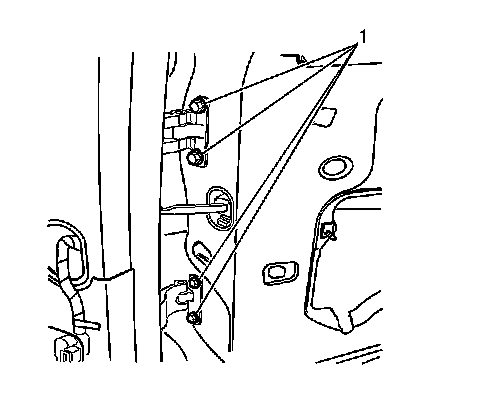

Rear Door Hinge: Service and Repair
Rear Side Door Hinge Replacement
Removal Procedure

Important: Replace only one hinge at a time then repeat procedure for the second hinge, if needed.
1. Open the rear and the front doors.
2. Support the door.
3. Mark the position of the hinge on the body.
4. Remove the hinge to body bolts (1).
5. Remove the hinge to door bolts.
Installation Procedure
1. Align the pillar side of the hinge to the marks made on the pillar during removal.
2. Install the hinge to the pillar.
Notice: Refer to Fastener Notice (Fastener Notice) .
3. Install the bolts (1).
Tighten the hinge to pillar bolts to 25 N.m (18 lb ft).
4. Align the hinge to the door.
5. Install the bolts.
Tighten the hinge to door bolts to 25 N.m (18 lb ft).
6. Remove the door support.
Notice: Striker alignment is a crucial part of door latch operation. Do not use the door striker to adjust the door to the vehicle. Failure to properly adjust the striker can result in damage to the door latch and the striker.
7. Adjust the door. Refer to Door Adjustment (Adjustments) .
8. Touch up any paint damage to the hinge and the bolts with body color paint.